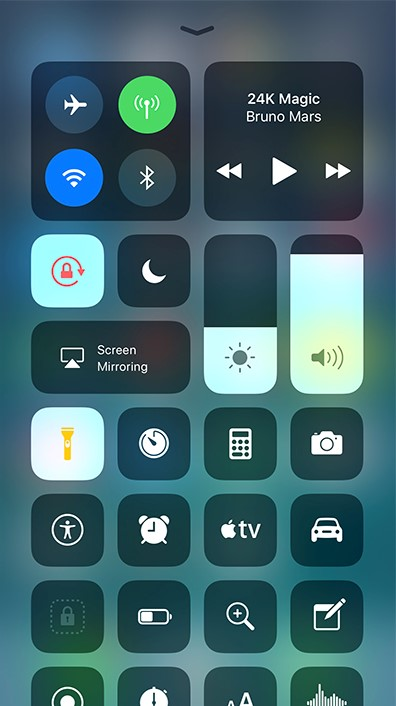

iOS 11 will be here in a few months, so lets cover the new main features!

One of the main iOS 11 features is the new Control Center. It has been changed yet again,
and now has a fullscreen design. The screen brightness and sound sliders now have
a new position
under the new media controls. Majority of the new buttons can be 3D Touched,
or on devices without 3D
Touch, long hold. A very unexpected feature was the
screen recorder, as this is something
Apple has seemed to be against for many years.
There is also an Apple TV remote built into the Control
Center, for those who wish
to use it. Finally, the Control Center is customisable! You can add or remove certain
toggles
in the Control Center.
Another new feature is the redesigned App Store. The App Store
now has has a new 'Today' tab, which shows stories about
how to
use certain apps, as well as 'App of the Week' and so on. Buttons and
text are bigger than before, so it makes things easier to use.
Overall, the new App Store looks and feels better and it is
more user friendly as well.
There are also a range of new icons in iOS 11. The App Store
has a new icon, with the App Store logo the center of it.
The iTunes Store also has a new icon, which
is a star. Apple completely ditched the old logo, whereas in the
App Store, there are some similarities. The Contacts app
also has a new icon, which, in my opinion, looks a lot
better. Finally, the Calculator and Reminders have new icons,
with the Calculator icon reflecting the new interface, and the
Reminders icon has been slightly tweaked.